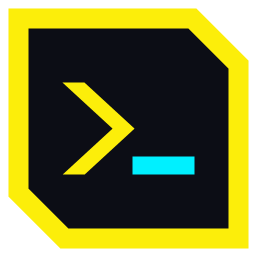
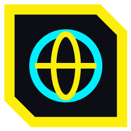
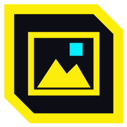

NS-1NEURAL SERIES
WINDOWS 10 / 11 // x64
>_ NEURAL SYSTEMS // DESKTOP SUITE
NEURAL SERIES
Six cyberpunk desktop apps for Windows: a calculator, a notepad, a file explorer, a terminal, a web browser and an image viewer.

NT-5NeuralTerm

NW-1NeuralWeb

VW-3NeuralView